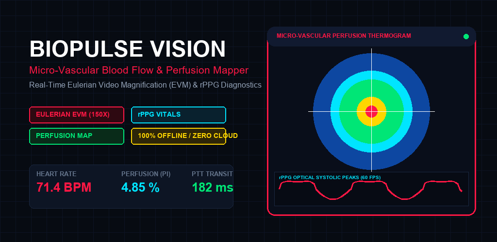

Micro-Vascular Blood Flow & Perfusion Mapper
Clinical-grade non-contact optical hemodynamics revealing invisible capillary pulses, 2D perfusion heatmaps, and vital signs in real time at 60 FPS.

Eulerian Video Magnification (EVM)
Multi-scale Laplacian spatial pyramid decomposition amplifying subtle sub-surface capillary blood flow from 10x to 150x optical gain.
2D Perfusion Thermogram
Real-time false-color tissue oxygenation heatmaps mapping micro-vascular density across facial, malar, and fingertip capillary beds.
Non-Contact rPPG Waveform
Crisp optical photoplethysmogram displaying systolic peaks, dichrotic notches, and diastolic runoff curves with live Heart Rate and Perfusion Index (PI).
Cardiovascular Biomarkers
Quantifies Pulse Transit Time (PTT), Capillary Refill Kinetics, and Pulse Wave Velocity (PWV) without sensors or wearable attachments.
Clinical Optical Vault
Save historical session records with physiological notes, multi-zone comparisons, and uncompressed CSV biometric data exports.
100% Private & Ad-Free
Zero cloud connections, zero telemetry libraries, and zero recurring fees. Video frames are processed entirely in local device memory.
Technical Architecture Specifications
| Optical Magnification Architecture | Eulerian Video Magnification (EVM) with Laplacian Pyramid Decomposition |
| Temporal Filtering | Butterworth Bandpass (0.75 Hz to 3.5 Hz / 45-210 BPM) |
| Photometric Analysis | Green-Channel Hemoglobin Absorption Photoplethysmography (rPPG) |
| Inference Engine | 60 FPS On-Device NPU / GPU Acceleration |
| Package Name | com.biopulse.vision |
| Operating Mode | 100% Offline Edge Execution / Zero Telemetry |